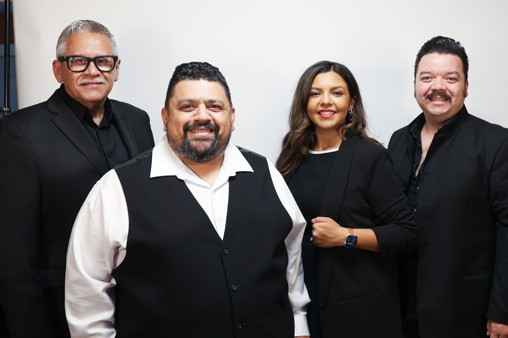
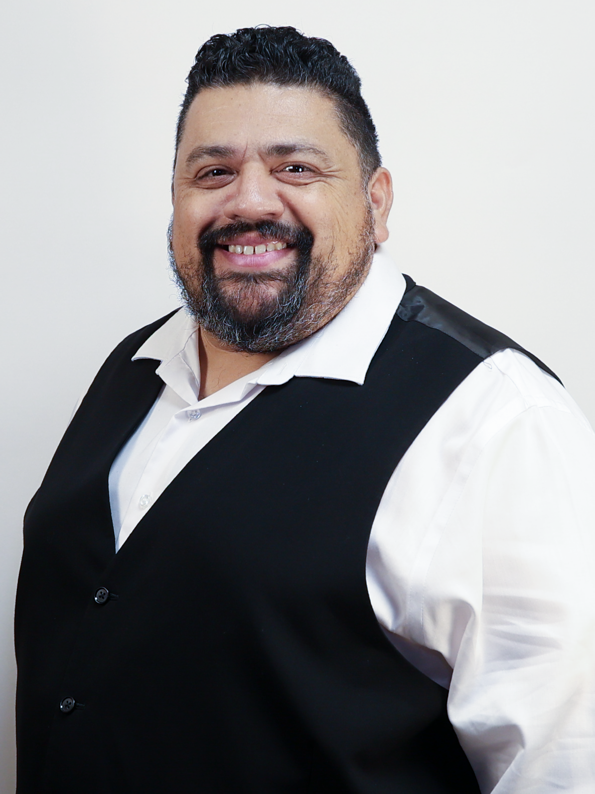
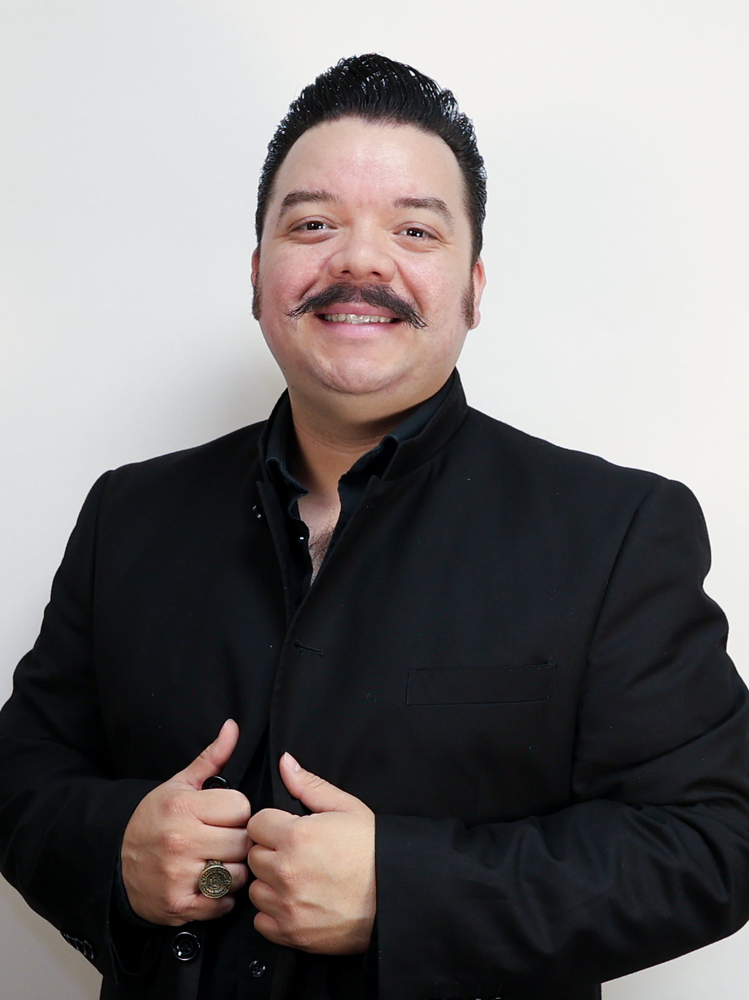
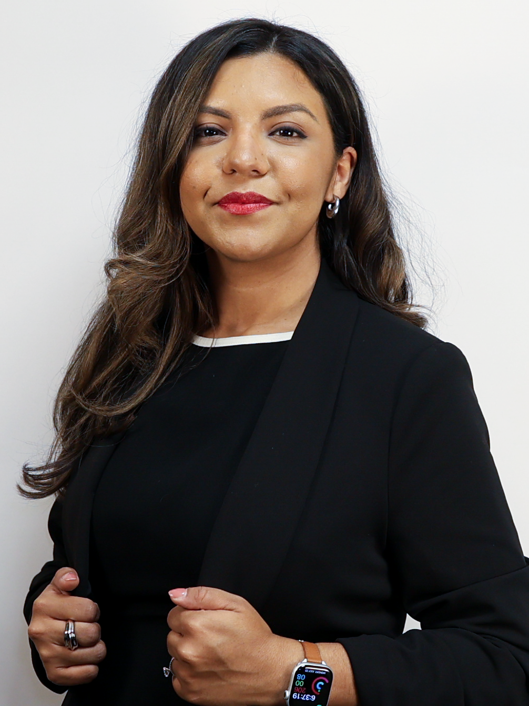
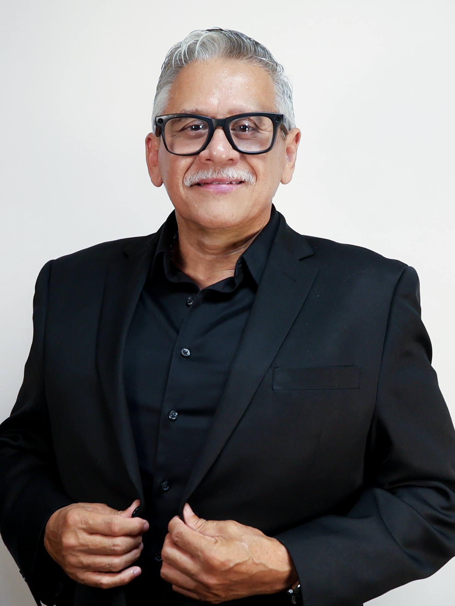

Our Leadership
Rooted in the music. Committed to its future.

Preserving the story together.
The Viva Tejano Cultural Arts Foundation is led by artists, cultural advocates, media professionals, and members of the Tejano music community who share a commitment to documenting, preserving, and celebrating the people and stories that built this music.

Vicente “Chente” Barrera
GRAMMY Award-winning artist Vicente “Chente” Barrera has spent more than three decades contributing to Tejano music as a vocalist, drummer, songwriter, producer, and recording musician. A San Antonio native, Barrera became one of the genre’s most prolific session musicians, contributing to hundreds of recordings and working with artists including Jay Perez, La Tropa F, Ram Herrera, Jennifer Peña, Intocable, Gary Hobbs, Bobby Pulido, and David Lee Garza y Los Musicales. He launched his career as a frontman with Taconazo in 1998 and was inducted into the Tejano Roots Hall of Fame in 2005. His Sigue El Taconazo earned the GRAMMY Award for Best Tejano Album in 2007.
As Co-Founder and Artistic Director, Chente brings both a working musician’s perspective and a lifetime of firsthand experience within the Tejano music community to the Foundation’s preservation efforts.

Mike Torres III
Mike Torres III is a musician, producer, arranger, record-label executive, and cultural advocate whose career has been rooted in Chicano and Tejano music. A multi-instrumentalist who began performing professionally at a young age, Torres eventually toured as a member of Little Joe y La Familia before becoming co-founder and bandleader of San Antonio-based Tejano orquesta LA 45. He is also CEO of NextGen Latinx Records, an independent label built around developing contemporary artists while preserving the musical traditions and cultural identity of the Tejano community.
As Co-Founder and Executive Director, Mike oversees the Foundation’s preservation, documentation, educational, and community initiatives, with a particular focus on building a permanent digital record of the musicians and stories that have shaped Tejano music.

Claudia-Renée Gonzalez
Claudia-Renée Gonzalez is a musician, multimedia artist, creative director, and arts advocate whose work bridges traditional Mexican-American music and contemporary media. A graduate in Music Composition with a minor in Music Technology, she has been a longtime member and lead trumpeter of Mariachi Las Alteñas and has performed throughout the United States, including at the Hollywood Bowl. Her work extends beyond the stage into arranging, graphic design, photography, cinematography, marketing, music-video production, and digital storytelling.
Claudia also serves as Director of Media & Public Relations for the Los Altos Mariachi Arts Council and has used her creative work to document and promote artists and cultural organizations throughout San Antonio. Her combination of musical experience, technology, visual storytelling, and nonprofit arts work brings an important perspective to the Foundation’s mission of preserving Tejano history for future generations.

Enrique G. “Rick” Balderrama
Enrique G. “Rick” Balderrama is a Tejano vocalist and recording artist who has built an extensive catalog of recorded music over more than a decade. Performing professionally as Rick Balderrama, he has released numerous albums, singles, and collaborations while continuing to actively record and contribute to the contemporary Tejano music community.
Rick is also the son of Henry Balderrama of La Patria, connecting his own musical career to an earlier generation of Tejano history. Growing up within that musical legacy while establishing a recording career of his own gives Rick a unique perspective on how Tejano music, traditions, and stories are passed from one generation to the next.
As a Founding Board Member, Rick brings both the perspective of an active recording artist and a direct connection to the musical generations the Foundation seeks to document and preserve.